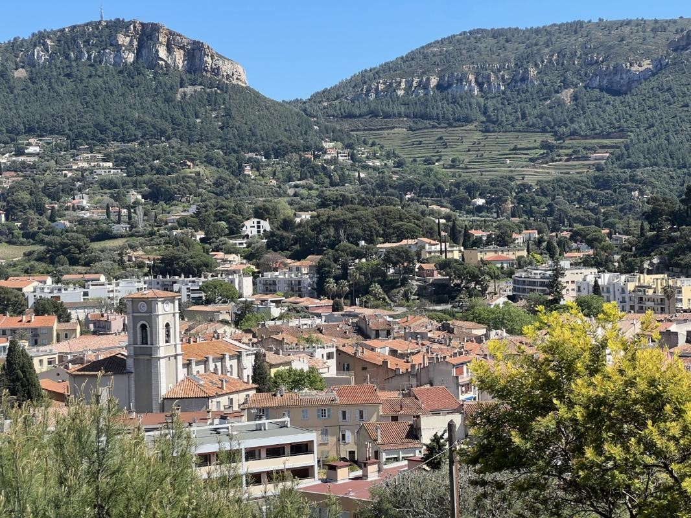

Immobilier d'exception
Immobilier d'exception
Villa Verdun
Maison de ville entièrement rénovée en 2026, au pied du Cap Canaille et à quelques pas du port. 170 m² habitables, quatre chambres, piscine et cuisine d'été.
Un pied dans le village,
l'autre dans les calanques.
Il y a des adresses qui dispensent de tout commentaire. L'adresse de la Villa Verdun est de celles-là : le port se rejoint à pied, le marché aussi, et la plage encore. Derrière, le Cap Canaille ferme l'horizon de sa falaise rouge — la plus haute d'Europe à tomber dans la mer.
La Villa Verdun occupe cette position rare sans la revendiquer. De la rue, c'est une maison de ville provençale, volets clairs et tuiles rondes. Passé le seuil, c'est autre chose : cent soixante-dix mètres carrés entièrement repris en 2026, où l'on a gardé les poutres, la pierre et la hauteur — et changé tout le reste.
Le charme de l'ancien, donc. Mais avec les réseaux neufs, l'isolation neuve, les menuiseries neuves, la climatisation, et la garantie décennale par-dessus.

Huit évidences.
Ce que la maison offre, en un coup d'œil. Le détail des surfaces et des prestations figure en fin de dossier.


Cinquante mètres carrés
d'un seul tenant.
Pas de couloir, pas de cloison inutile : la pièce de vie s'ouvre dès l'entrée et file jusqu'à la cuisine. La hauteur sous plafond et les poutres apparentes lui donnent l'ampleur ; le parquet en chêne massif, posé en point de Hongrie, lui donne la chaleur.
Une cheminée à insert tient le fond de la pièce. L'hiver, elle suffit. L'été, la climatisation prend le relais dans toute la maison.
Ce que l'on garde,
ce que l'on refait.

La pierre de taille est restée nue là où elle méritait de l'être. La charpente a été mise en peinture claire plutôt que masquée. Le résultat tient en une phrase : on lit l'âge de la maison, on ne subit rien de ses défauts.
- Conservé — poutres, charpente, pierre apparente, hauteur sous plafond
- Refait — réseaux électriques et sanitaires
- Refait — isolation et menuiseries
- Refait — sols en chêne massif, point de Hongrie
- Ajouté — climatisation dans toute la maison
- Ajouté — quatre salles d'eau neuves
Ouverte,
et équipée.
Elle prolonge la pièce de vie sans la couper : on cuisine avec les autres, pas à côté d'eux. Façades bleu pétrole sous l'arche de plâtre, plan de travail pleine longueur, électroménager intégré. La vue reste dégagée depuis l'évier.


Quatre chambres,
quatre salles d'eau.
Chaque chambre dispose de sa propre salle d'eau — pas de partage, pas d'arbitrage le matin. La première est une suite parentale de plain-pied ; les trois autres occupent le niveau jardin, l'une ouvrant directement sur la piscine, l'autre sur sa terrasse privative.


Neuves,
et pas interchangeables.
Faïence en damier et robinetterie cuivre d'un côté, terracotta et bois cannelé de l'autre. Quatre pièces d'eau entièrement refaites en 2026, chacune avec sa douche à l'italienne — et aucune qui ressemble à la voisine.


La mezzanine,
et la mer.
Sous les toits, une mezzanine mansardée que les verrières inondent de lumière du matin au soir. C'est de là que la vue porte le plus loin : la mer, le Cap Canaille, la couronne de Charlemagne et le château de Cassis.
Bureau, chambre d'appoint, salle de jeux ou simple pièce à ne rien faire — elle se plie à l'usage qu'on lui donne. C'est souvent la pièce que l'on finit par préférer.
Dehors,
tout le Sud.
Quatre cents mètres carrés de parcelle, un jardin paysagé avec pelouse et arrosage automatique, plusieurs terrasses en pierre qui suivent la course du soleil. La cuisine d'été prend le relais dès les beaux jours ; la piscine, en béton armé, reste à l'abri des regards.

Cassis,
tout à pied.
Entre le plus haut promontoire maritime de France et le parc national des Calanques, Cassis tient dans un mouchoir de poche. Douze mille habitants l'hiver, un port de pêche devenu port de plaisance, un vignoble classé en AOC depuis 1936 — et la voiture qui devient une option.
- Port, restaurants et terrassesÀ pied
- Marché et commerces de boucheÀ pied
- Plage de la Grande MerÀ pied
- Calanque de Port-MiouQuelques minutes
- Vignoble AOC CassisAux portes de la ville
- MarseilleEnviron 30 minutes
- Aéroport Marseille-ProvenceEnviron 45 minutes
Rénovée
pour durer.
Une maison ancienne rénovée en 2026 par un professionnel n'est pas une maison ancienne rénovée par son propriétaire. La différence tient en deux lignes : la garantie décennale et l'assurance dommages-ouvrage.
Les détails
qui comptent.
- Surface habitable170 m²
- Parcelle400 m²
- Pièce de viePlus de 50 m²
- Chambres4, chacune avec sa salle d'eau
- Suite parentale de plain-pied1
- MezzanineMansardée, vue mer et Cap Canaille
- WC indépendantNiveau jardin
- SolsChêne massif, point de Hongrie
- CuisineOuverte, neuve et équipée
- ChauffageCheminée à insert et climatisation
- ExtérieursJardin paysagé, arrosage automatique, terrasses en pierre
- PiscineBéton armé
- Cuisine d'étéÉquipée
- Cave6 m²
- Stationnement1 place privative
- RénovationIntégrale, livrée en 2026
- GarantiesDécennale et dommages-ouvrage
- Taxe foncière1 000 € par an
Surfaces indiquées par le vendeur, sous réserve de mesurage. Informations non contractuelles, susceptibles d'évoluer jusqu'à la signature.
Quatre étapes,
sans pression.
Le bien est diffusé de façon confidentielle. Nous qualifions chaque demande avant d'organiser la moindre visite — par respect pour le vendeur, et pour ne pas vous faire perdre votre temps.
- 01La brochureVous avez ce dossier entre les mains. Plans, prestations, photographies et conditions d'acquisition y figurent.
- 02L'échangeUn appel d'une quinzaine de minutes. Vos questions, votre projet, votre calendrier — et notre avis franc sur l'adéquation.
- 03La visiteSur place ou en visioconférence, à votre rythme. Nous vous laissons le temps de revenir une seconde fois.
- 04L'acquisitionOffre, compromis, financement, notaire. Nous restons à vos côtés jusqu'à la remise des clés.
Ce que dit
le diagnostic.
L'état des risques et pollutions a été établi le 26 juin 2026 par un opérateur agréé, pour la parcelle cadastrée CL 58 sur la commune de Cassis (référence d'édition 3739891). En voici la synthèse — le document intégral, dix pages, est annexé au dossier.
- InondationAucun risque sur la parcelle
- Mouvements de terrain (argiles)Aucun risque
- Érosion (30 et 100 ans)Aucun risque
- Bruit aérien (PEB)Hors périmètre
- Risques miniersCommune non concernée
- Risques technologiquesCommune non concernée
- Sites BASOL et ICPE à moins de 500 mAucun
- Feu de forêtPPR approuvé le 17/07/2018 — aucun travaux prescrit
- DébroussaillementObligation légale (zonage informatif)
- SismicitéNiveau 2 sur 5 — faible
- RadonNiveau 2 sur 3
Aucun risque d'inondation, de retrait-gonflement des argiles ni d'érosion ne pèse sur la parcelle, et aucun site pollué ou installation classée ne figure dans un rayon de cinq cents mètres. Le plan de prévention feu de forêt s'applique à l'ensemble de la commune sans imposer de travaux sur ce bien : seule l'obligation légale de débroussaillement demeure, comme partout en zone boisée méditerranéenne.
Synthèse établie à partir de l'état des risques et pollutions du 26/06/2026, valable six mois et actualisé le cas échéant lors de la signature. Document intégral remis avec le dossier. Informations disponibles sur georisques.gouv.fr.
Parlons-en
quand vous voulez.
Une question sur la maison, sur le quartier, sur le financement ? Écrivez-nous ou prenez rendez-vous : nous répondons sous vingt-quatre heures ouvrées.
Immobilier d'exception
- Le bienVilla Verdun
- AdresseCassis (13260) — adresse exacte lors de l'échange
- DiffusionConfidentielle
- Délai de réponse24 heures ouvrées
Téléphone, e-mail et lien WhatsApp — à renseigner avant diffusion du dossier.
Document et photographies non contractuels. Brochure confidentielle,
destinée au seul usage de son destinataire.
© 2026 Prodigio — Tous droits réservés.